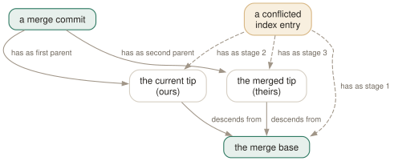

Day 04
Merging
Two histories become one: the merge base, the fast-forward, and a conflict read properly.
By the end of today you can
- predict whether a merge will fast-forward or create a merge commit, before you run it
- read a conflict in
zdiff3style and resolve it knowing what each side intended - inspect the three versions of a conflicted file, and abort a merge cleanly
A merge is a three-way comparison
Merging two branches does not compare two files. It finds the commit where the histories parted — the merge base — works out what each side changed since then, and applies both sets of changes. Where the changes touch different lines, git combines them silently. Where they touch the same lines differently, you get a conflict. Everything about merging follows from that.
git merge-base shows you the commit git will use:
$ git merge-base main slow
1e379e1fb16a6575af5c290c61e59601fa3a172e
The result of a real merge is a commit with two parents. The manual page's DISCUSSION puts it in one line: commits with more than one parent represent merges of independent lines of development. It is an ordinary commit otherwise — a tree, an author, a message — and its tree is the combined snapshot.

Fast-forward, or a merge commit
If the current branch has not moved since the other one branched off, the merge base is the current tip. There is nothing to combine, so git moves the branch pointer forward and calls it a fast-forward:
$ git merge fix
Updating df97b49..014bdc9
Fast-forward
config.toml | 2 +-
1 file changed, 1 insertion(+), 1 deletion(-)
No new commit; main now names the same commit as fix. --no-ff makes a merge commit anyway, which some teams prefer so that a feature appears in history as one unit:
$ git merge --no-ff -m "Merge branch 'feat2'" feat2
Merge made by the 'ort' strategy.
$ git log --oneline --graph
* 1e379e1 Merge branch 'feat2'
|\
| * 72a9d3f Add log level
|/
* 014bdc9 More retries
* df97b49 Initial config
The opposite switch, --ff-only, merges only if a fast-forward is possible and refuses otherwise. It is the safe way to ask “has anything happened on my side?” — if it refuses, nothing has changed:
$ git merge --ff-only slow
hint: Diverging branches can't be fast-forwarded, you need to either:
hint:
hint: git merge --no-ff
hint:
hint: or:
hint:
hint: git rebase
fatal: Not possible to fast-forward, aborting.
Reading a conflict
Both branches changed the same line: one lowered a timeout to 10, the other raised it to 60. git stops, writes markers into the file, and leaves the merge half-done:
$ git merge slow
Auto-merging config.toml
CONFLICT (content): Merge conflict in config.toml
Automatic merge failed; fix conflicts and then commit the result.
$ git status -s
UU config.toml
With the default merge style, the file shows the two sides and nothing else. With zdiff3 (today's config line) it shows the base between them, after |||||||:
# conflictStyle = merge (default)
<<<<<<< HEAD
timeout = 10
=======
timeout = 60
>>>>>>> slow
# conflictStyle = zdiff3
<<<<<<< HEAD
timeout = 10
||||||| 1e379e1
timeout = 30
=======
timeout = 60
>>>>>>> slow
Now the conflict is legible: the base was 30, one side cut it to 10, the other raised it to 60. Those are two decisions, and choosing between them is a conversation, not a guess. The z in zdiff3 is for “zealous”: lines that both sides changed identically are moved outside the markers instead of being repeated on both sides. Where the two styles differ, it looks like this:
# diff3
<<<<<<< HEAD
def greet(name):
print("hey", name)
||||||| bfa1f83
def greet():
print("hi")
=======
def greet(name):
print("hello", name)
>>>>>>> other
# zdiff3
def greet(name):
<<<<<<< HEAD
print("hey", name)
||||||| bfa1f83
def greet():
print("hi")
=======
print("hello", name)
>>>>>>> other
Three versions in the index
Yesterday the index held one entry per path. During a conflict it holds up to three, called stages: 1 is the base, 2 is ours (the branch you are on), 3 is theirs (the branch being merged). The DISCUSSION section mentions them in its last paragraph; this is where they matter.
$ git ls-files -u
100644 40e3f0b64f3c622c45c61f863cc3ceaf5b75a7b8 1 config.toml
100644 c55159fc863ec40e5ac6dce41e6cac7184cb2eb4 2 config.toml
100644 b04b1a5aff230654988fece33540344191d4d477 3 config.toml
$ git show :1:config.toml | grep timeout
timeout = 30
$ git show :2:config.toml | grep timeout
timeout = 10
$ git show :3:config.toml | grep timeout
timeout = 60
That :<n>:<path> syntax is part of the revision language (Day 7). The stages are also why git checkout --conflict=zdiff3 config.toml can rebuild the markers if you mangle the file: the three versions are still in the index.
- Edit the file to what it should be. Remove every marker.
git add config.toml— the three stages collapse back into one entry, andgit statusstops listing it as unmerged.git commit— git has kept the merge's second parent in.git/MERGE_HEADand pre-writes the message. The result is the two-parent commit.
Or give up: git merge --abort puts the branch, index and working tree back where they were before git merge.
Today's habit
Set merge.conflictStyle to zdiff3 and never read a two-sided conflict again. When one appears, read the base first, then ask each side's author — or each side's commit message — why they changed it.
Tomorrow: the same ideas, when one of the branches lives on another machine.
New vocabulary
Commands
| Command | Does |
|---|---|
git merge <branch> | Bring the branch's history into the current one: fast-forward if possible, else a merge commit. |
git merge --ff-only <branch> | Merge only if it is a fast-forward; otherwise refuse and change nothing. |
git merge --no-ff <branch> | Always create a merge commit, even when a fast-forward was possible. |
git merge --abort | Give up a conflicted merge and restore the state before it started. |
git merge-base A B | Print the best common ancestor of two commits — the version a merge compares against. |
git ls-files -u | List the unmerged index entries: one line per stage per conflicted path. |
git show :1:<path> | Show the base version of a conflicted file. :2: is yours, :3: theirs. |
git checkout --conflict=merge <path> | Recreate the conflict markers in a file you mangled; =zdiff3 works too. |
Options
| Option | Does |
|---|---|
merge.conflictStyle | Choose the marker style: merge (default), diff3 or zdiff3. |
Today's configappend to ~/.gitconfig
Show the common ancestor inside every conflict, not just the two sides. Without the base you can see what each side has, but not what each side changed. zdiff3 also moves lines both sides agree on out of the markers.
[merge]
conflictStyle = zdiff3
git reads its config afresh on every command, so there is nothing to reload. Check what is in force, and which file it came from, with git config list --show-origin.
Drillsdo these in a real terminal, today
Self-check
Answer out loud first, then unfold.
You merge fix into main and git says “Fast-forward”. Your team lead wanted a merge commit to show the fix as a unit. What happened, and how do you get one next time?
main had not moved since fix branched off, so the merge base was main itself. There was nothing to combine: git moved the main pointer forward to fix's commit, and the history is a straight line. git merge --no-ff fix forces a merge commit with two parents even when a fast-forward was possible.
In a conflict, the HEAD side says timeout = 10 and the other says timeout = 60. Which one is right?
You cannot tell from two sides alone. If the base said timeout = 30, both sides changed it deliberately and you have to ask why. If the base said timeout = 10, only the other side changed it, and 60 is almost certainly right — but git would not have reported a conflict then, so something else is going on.
This is the argument for zdiff3: the ||||||| section shows the base, and a conflict becomes a question about two changes.
Halfway through resolving a conflict you make a mess of the file. How do you get the original markers back without aborting the whole merge?
git checkout --conflict=merge <path> (or =zdiff3). The index still holds the three stages — base, ours, theirs — for every unresolved path, so git can regenerate the conflicted file from them. Once you git add the file the stages collapse to one and this no longer works; use git merge --abort and start again.
git already refuses to merge when your uncommitted edits touch a file the merge needs. So why does the manual page still warn against merging with uncommitted changes?
Because the refusal covers only the files that overlap at the start. Edits to other files are carried through the merge, and once a conflict is open you are editing the working tree again — your changes and the merge's are now mixed in the same place. git-merge(1) says that git merge --abort will “in some cases be unable to reconstruct the original (pre-merge) changes”, especially if they were modified after the merge started. Commit or stash (Day 13) first, and --abort always has a clean state to return to.
Cheat sheet
git merge-base A B # where they parted: the base of the 3-way merge
git merge BRANCH # fast-forward if possible, else a 2-parent commit
git merge --ff-only BRANCH # refuse unless it is a fast-forward
git merge --no-ff BRANCH # always a merge commit
git ls-files -u # conflicted paths, one line per stage
git show :1:F :2:F :3:F # base, ours, theirs
git checkout --conflict=zdiff3 F # rebuild the markers
git add F && git commit # resolved; MERGE_HEAD becomes parent 2
git merge --abort # back to before the merge
Everything through Day 04
Commands
| Command | Does |
|---|---|
git init -b main | Create an empty repository whose first branch is main. |
git hash-object <file> | Print the object name the file's contents would get. Writes nothing without -w. |
git cat-file -t <object> | Print an object's type: blob, tree, commit or tag. |
git cat-file -p <object> | Pretty-print an object's contents. The one command that shows what git really stores. |
git cat-file -s <object> | Print an object's size in bytes. |
git ls-tree -r <tree-ish> | List every blob in a tree, recursively, with mode and hash. |
git rev-parse HEAD | Turn a name into the full hash it currently means. |
git count-objects -v | Count loose and packed objects and the disk they use. |
git status -s | Show each changed path with two columns: index vs HEAD, then working tree vs index. |
git add <path> | Copy the file's current contents into the index. Writes the blob immediately. |
git add -p | Walk through each hunk and choose which ones go into the index. |
git diff | Show what differs between the index and the working tree — what add would stage. |
git diff --staged | Show what differs between HEAD and the index — what commit would record. |
git restore <path> | Overwrite the working-tree file with the index version. Discards unstaged edits. |
git restore --staged <path> | Reset the index entry to HEAD's version. The working tree is untouched. |
git commit [-a] | Turn the index into a tree, wrap it in a commit, move the branch to it. -a first stages every modified tracked file (never untracked ones). |
git rm --cached <path> | Remove a path from the index only; the file stays on disk, now untracked. |
git branch | List local branches; * marks the one HEAD names. |
git branch -v | List branches with the commit each points at and its subject line. |
git branch <name> | Create a branch at HEAD without switching to it. |
git switch <branch> | Point HEAD at a branch and update the index and working tree to its commit. |
git switch -c <name> | Create a branch at HEAD and switch to it in one step. |
git switch - | Switch back to the branch you were on before. |
git switch --detach <commit> | Point HEAD directly at a commit, with no branch in between. |
git branch -d <name> | Delete a branch, refusing unless it is merged into its upstream (or into HEAD, if it has none). |
git branch -D <name> | Delete a branch unconditionally. |
git branch -m <old> <new> | Rename a branch. |
git merge <branch> | Bring the branch's history into the current one: fast-forward if possible, else a merge commit. |
git merge --ff-only <branch> | Merge only if it is a fast-forward; otherwise refuse and change nothing. |
git merge --no-ff <branch> | Always create a merge commit, even when a fast-forward was possible. |
git merge --abort | Give up a conflicted merge and restore the state before it started. |
git merge-base A B | Print the best common ancestor of two commits — the version a merge compares against. |
git ls-files -u | List the unmerged index entries: one line per stage per conflicted path. |
git show :1:<path> | Show the base version of a conflicted file. :2: is yours, :3: theirs. |
git checkout --conflict=merge <path> | Recreate the conflict markers in a file you mangled; =zdiff3 works too. |
Options
| Option | Does |
|---|---|
user.name / user.email | Set the identity written into every commit's author and committer lines. |
init.defaultBranch | Name the first branch of every new repository. |
commit.verbose | Show the staged diff below the message in the commit editor. |
branch.sort | Set the default order of git branch; -committerdate puts recent work first. |
merge.conflictStyle | Choose the marker style: merge (default), diff3 or zdiff3. |